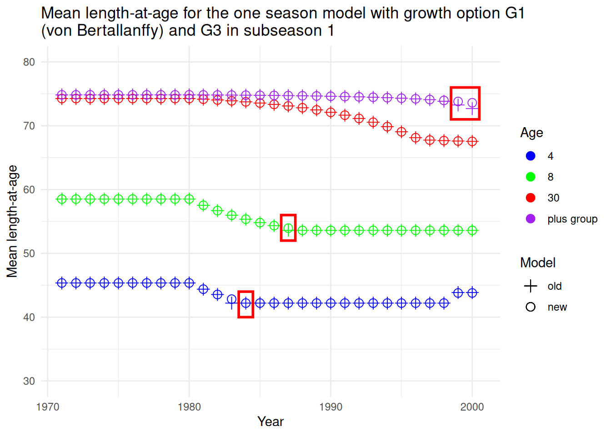
Demonstration of Interaction of Growth and Seasonality in SS3
Preface
A user noticed that the Gompertz growth model was misbehaving when using seasons-as-years with time-varying growth. This prompted renewed priority in completing a comprehensive review of growth. The resolution of the discrepancy is found in pull request #747 from June 2026. This document demonstrates the performance of the SS3’s growth and seasonality interaction as developed in SS3 v3.30.25, in comparison to the previous model version 3.30.24.1.
Growth in SS3
Why is growth so complicated in SS3? Unlike most models, SS3 is designed to accommodate flexibility regarding the within year timing of when a cohort of fish begins its growth, and flexibility regarding the exact timing within a year of when an observation is made. There also is the capability to allow growth parameters to change over time, including density-dependence, so size-at-age cannot be calculated just once at the beginning of the time series. This led to the development of three sections of code for calculating size-at-age:
- At the beginning of the time series, calculate size-at-age;
- At the beginning of each year, calculate the size-at-age to the beginning of each season within that year and to the beginning of the next year. This growth is according to the growth parameters of that year and follows cohorts alongthe diagonal of the time \(\times\) age matrix. Each cohort grows from its current size towards the current \(L_{inf}\) at a rate determined by the current growth rate (\(K\));
- At the time of each subseason (minimum is two subseasons per year or season), calculate the size-at-age as growth from the beginning of that season.
Within each of these sections, there is specific code for each major growth function:
- Von Bertallanffy
- Richards or Gompertz
- Three variants of age-specific \(K\)
- Growth cessation
Within each of the growth functions, there is an equation to calculate size-at-age for the first age past the linear growth age range, and code for calculating growth of older ages, and code for growth within the plus group.
All of the above options need to account for season duration, which is simply 1.0 for an annual model, but models with seasons within a year have great flexibility on number and duration of seasons, and models with seasons-as-years have a time step with a user specified duration in fractions of a year.
Unfortunately, as growth options were developed, nearly all the testing was with simple annual time steps; and as seasonality options were tested, nearly all the testing was with the simple von Bertallanffy function. This allowed some growth function and seasonality combinations to misbehave. Here we thoroughly tested all combinations and updated the code to behave as expected.
Test setup
The testbed for this demonstration started with the simple model setup which uses von Bertallanffy growth, single annual season, and growth parameters that were not time-varying. From that base model, 42 model setups were created to cover all combinations of the following features:
| Growth Options | G1, G2R, G2G, G3, G4, G5, G8 |
| Seasonality | annual, seasonal with two 6-month seasons, seasons-as-years with 6 month season duration |
| Model | 3.30.24.1 and 3.30.25 (new) |
Growth option G2R (Richards) was configured such that the additional parameter had nil effect so that the resultant growth curve should match growth option G1 (von Bertallanffy). Growth options G3, G4, G5 for age-specific \(K\) were configured to allow for \(K\) at ages 2, 3 and 4 to have a multiplier, but all multipliers were fixed at 1.0 such that the resultant growth curve should match growth option G1. Growth options G2G (Gompertz - same as Richards but with parameter set to 0.001) and G8 (cessation) were included in the demonstration, but there is no parameter configuration that allows exact match to growth option G1.
An additional design configuration set the AFIX2 (\(L\) at \(A_{max}\)) value to 19 years old for the one season (annual) and two season models, and to 38 seasons in the seasons-as-years model. With this configuration and the same \(K\) for all models, the seasons-as-years result is more easily compared to the other seasonality configurations.
All models were run with \(A_{min} = 0.0\) such that the \(L_{min}\) growth parameter set the size-at-age 0.0 post-settlement. Additional tests with alternative Amin configurations seem useful to add to this comparison.
The \(L_{inf}\) parameter was set to be time-varying with a block beginning in 1980. This triggers SS3 to update the growth calculations in that year and all subsequent years. The change was a decrease in \(L_{inf}\), so tests the code that prevents shrinkage of mean size-at-age for a cohort.
The cohort growth deviation parameter was set to have a 10% increase in years 1995 - 1997.
All models were run with no estimation (-nohess -stopph 0) so will produce output directly from the input parameter values.
The report.sso output table labelled MEAN_SIZE_TIMESERIES was used as the basis for model comparisons. Output for all years of each model configuration were output to a single csv file, with each row starting with identifiers for growth model, season, subseason, and model version. This allowed for easy filtering of the results to enable visual and numerical comparisons.
Results
Result 1: Base
The first result shows the comparability of growth models G1 and G3 at ages 4, 8, 30 and plus group (40) in an annual (one season) configuration. The results include the v3.30.24.1 (henceforth: old) model (X) and the new model (O).
Growth models G1 and G3
| Growth model: | G1, G3 |
| Seasonality: | annual |
| Season & subseason: | 1, 1 |
This comparison of the old and new models illustrate their overall similarity. They both show the expected decline in mean length-at-age (henceforth: length) response to the 1980 reduction in \(L_{inf}\), followed by the increase in 1999 for four year olds from the cohort growth dev on the 1995-1997 cohorts. There is a small discrepancy for one cohort (4 year olds in 1983, 8 in 1987). The old model used the reduced \(L_{inf}\) in 1980 to reduce the mean size of the entering year class in that year, rather than affecting only their growth to the next age in 1981. The new model corrects this problem.
The midseason (subseason = 2) lengths are usually used for the fishery body weight and survey body weight calculations. These also are correct in the old model.
| Growth model: | G1 |
| Seasonality: | annual |
| Season & subseason: | 1, 2 |
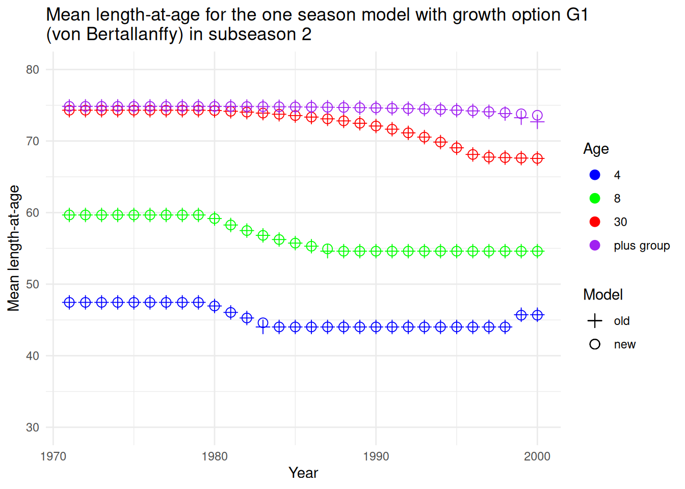
Growth model G2R (Richards)
With model G2R, we see that the old code did not contain the trap to prevent shrinking of fish. Therefore size at ages 30 and 40 began declining when \(L_{inf}\) was reduced to 65. The shrinkage trap is now implemented for all growth models.
| Growth model: | G2R |
| Seasonality: | annual |
| Season & subseason: | 1, 1 |
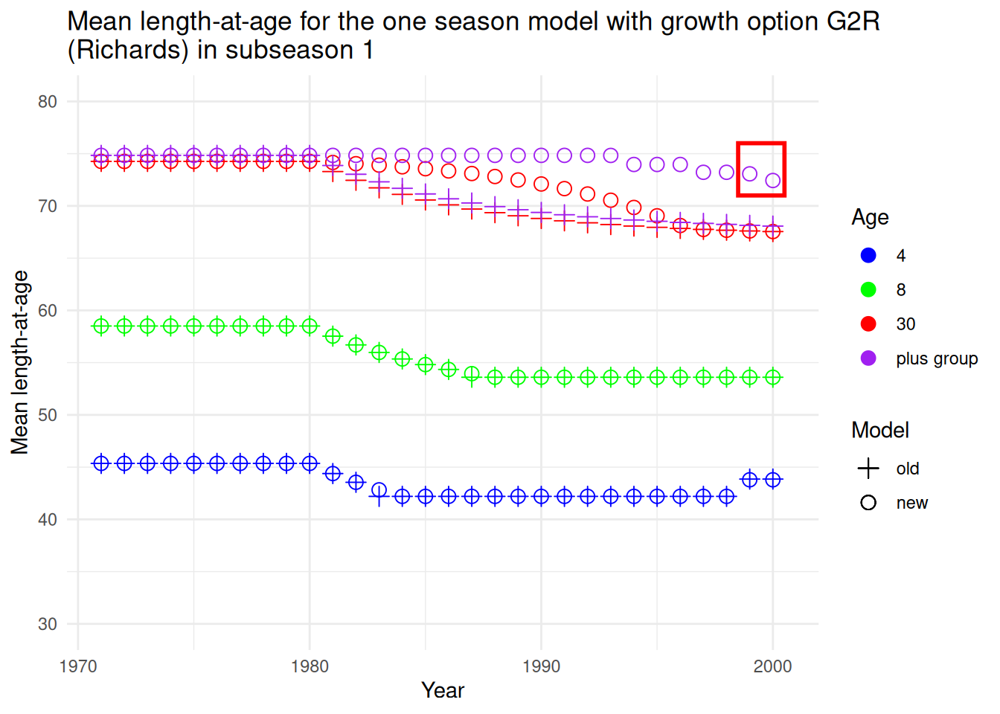
Result 2: Seasons-as-years demo
This investigation was launched on the basis of discrepancies that appeared in a Gompertz model with seasons-as-years and time-varying growth. First let’s show that a continuous string of 6 month seasons-as-years compares as expected to the one season model and the two seasons model in a year before time-varying starts when using the growth option 1 or 2. The length at age 4 seasons in the seasons-as-years is the same as the length at age 2 years in the one season and two seasons model.
| Growth | Season | Model | Morph | Yr | Seas | SubSeas | X0 | X1 | X2 | X3 | X4 | X39 | X40 |
|---|---|---|---|---|---|---|---|---|---|---|---|---|---|
| growth1 | oneseas | 3.30.24.1 | 1 | 1979 | 1 | 1 | 21.6597 | 28.9487 | 35.2398 | 40.6697 | 45.3561 | 74.7304 | 74.8372 |
| growth1 | seas_as_years | 3.30.24.1 | 1 | 1979 | 1 | 1 | 21.6597 | 25.4383 | 28.9487 | 32.2100 | 35.2398 | 71.8855 | 73.2279 |
| growth1 | twoseas | 3.30.24.1 | 1 | 1979 | 1 | 1 | 21.6597 | 28.9487 | 35.2398 | 40.6697 | 45.3561 | 74.7304 | 74.8372 |
Mean length-at-age for the all seasonal configurations of growth option 1 (von Bertalanffy) for season 1 and subseason 1 in 1979 using the old SS3 executable
Result 3: Problem with season duration < 1.0
Growth model G2G (Gompertz)
For this demonstration, the seasons-as-years configuration is used with G2G (Gompertz) growth. When growth becomes time-varying in 1980, SS3 begins recalculating size-at-age using the seasonal growth code. However, that code was applying season duration twice, so growth slows by 50% in comparison to the corrected model.
| Growth model: | G2G |
| Seasonality: | seasons-as-years |
| Season & subseason: | 1, 1 |
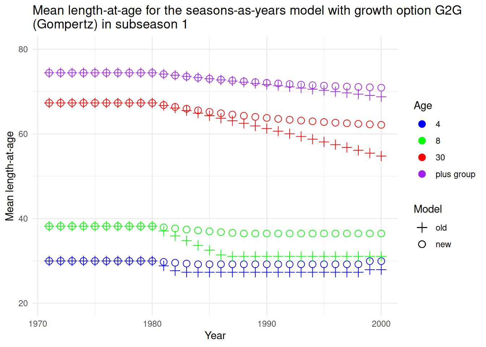
Growth model G2R (Richards)
The same occurs for Richards which uses the same code as Gompertz, just a different value for the exponent:
| Growth model: | G2R |
| Seasonality: | seasons-as-years |
| Season & subseason: | 1, 1 |
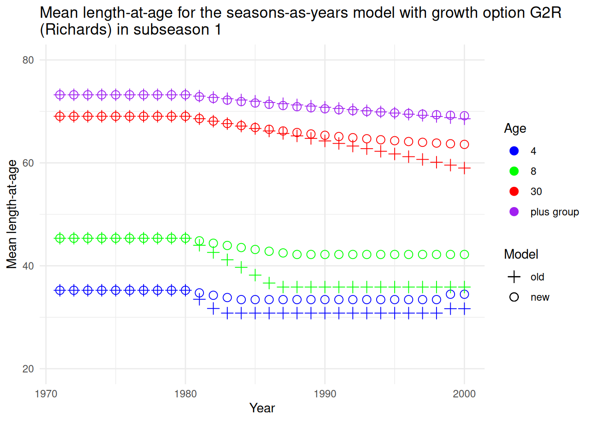
Growth model G1 with seasons-as-years
The next figure shows that the season duration of 0.5 causes the same problem for model G1.
| Growth model: | G1 |
| Seasonality: | seasons-as-years |
| Season & subseason: | 1, 1 |
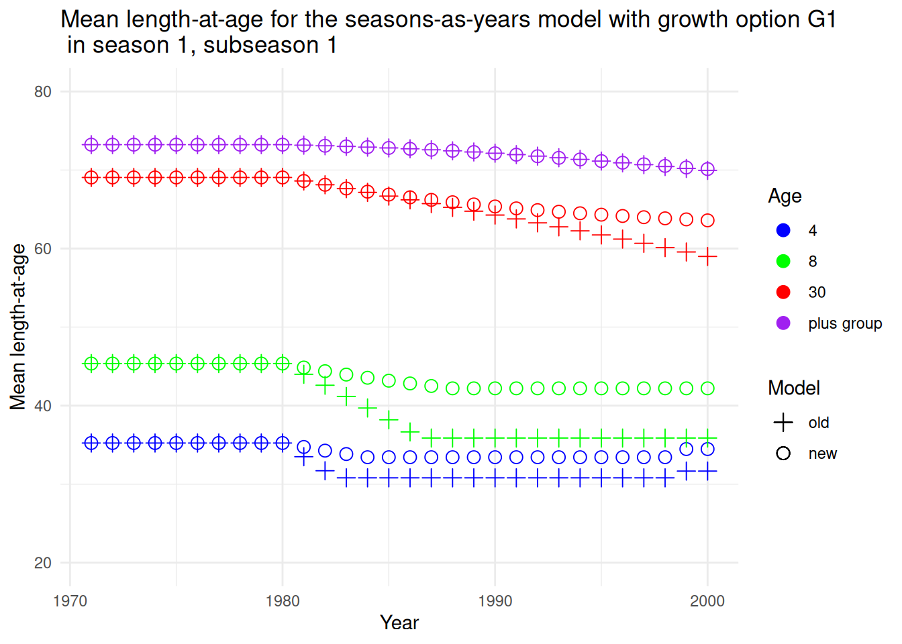
Growth model G1 with seasons-as-years in subseason 2
For subseason 2 (middle of season), the differential is even seen for start year lengths (years 1971-1979).
| Growth model: | G1 |
| Seasonality: | seasons-as-years |
| Season & subseason: | 1, 2 |
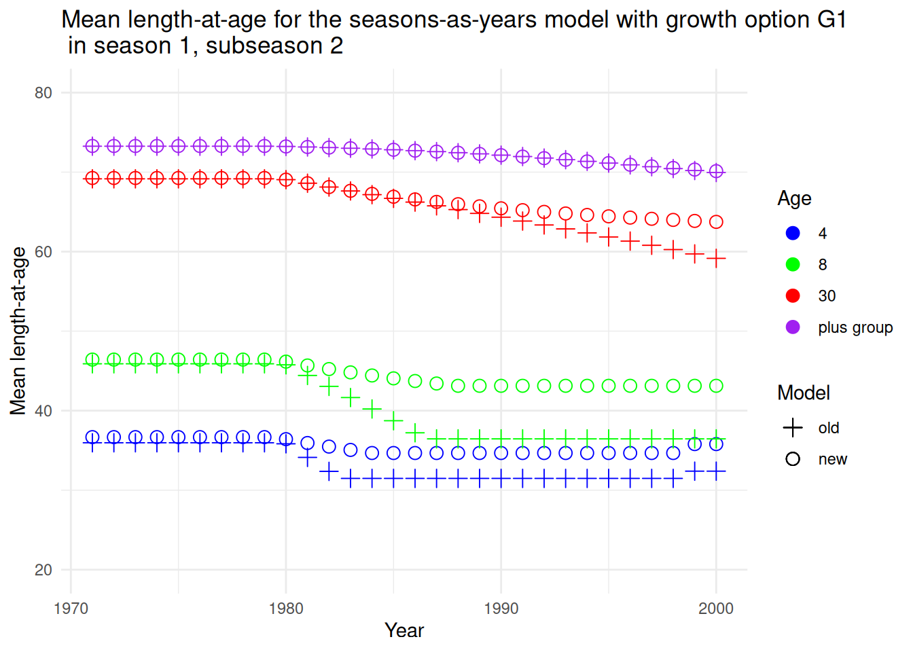
Growth model G1 with two seasons during season 2, subseason 1
This also has some effect on the two season model for all growth types. Most affected is seasons after season 1 for the first age on the growth curve, which was age 1 in this example. The figure below shows season 2 for age 1 being much affected by the decline in \(L_{inf}\) in 1980.
| Growth model: | G1 |
| Seasonality: | two seasons |
| Season & subseason: | 2, 1 |

Result 4: Prevent fish shrinking
Growth model G1
With \(L_{2}\) at age 38 changing from 71.65 cm to 65.0 cm in 1980, fish that were above that size are not allowed to shrink with G1, G3, G4, G5. With the scenario’s growth rate, the \(L_{2}\) resulted in \(L_{inf}\) being 74.9 cm and the mean size in the plus group (age 40) being 74.75 cm in the initial year. The figure below shows ages 39 and 40 with a gradual decline towards 65.0 cm, with age 39 declining faster than the plus group.
| Growth model: | G1 |
| Seasonality: | one season |
| Season & subseason: | 1, 1 |
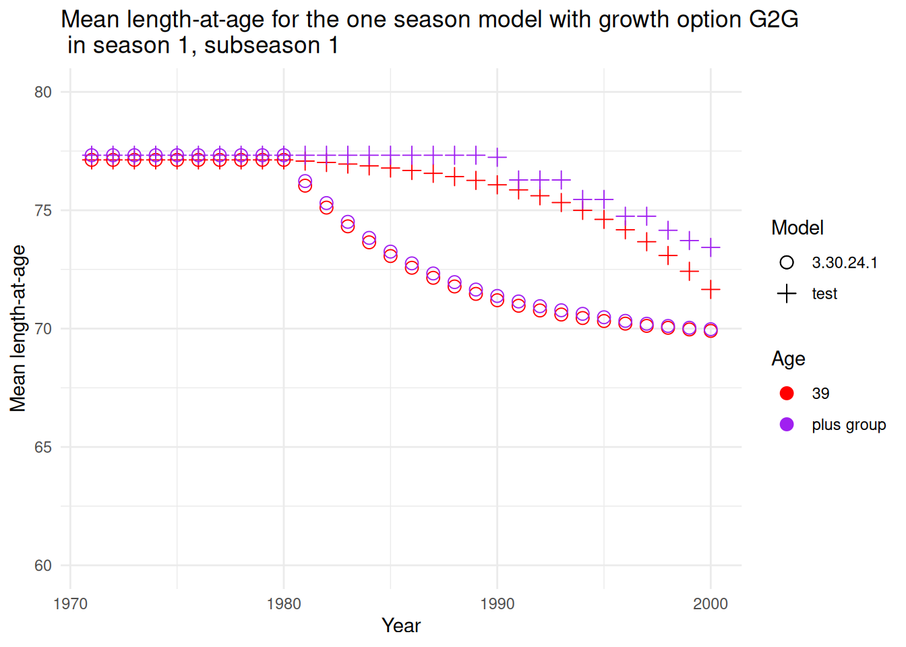
Growth model G2
Growth models G2/G3 and G8 lacked code to prevent shrinkage, so the decline in length occurred immediately after 1980.
| Growth model: | G2G |
| Seasonality: | one season |
| Season & subseason: | 1, 1 |
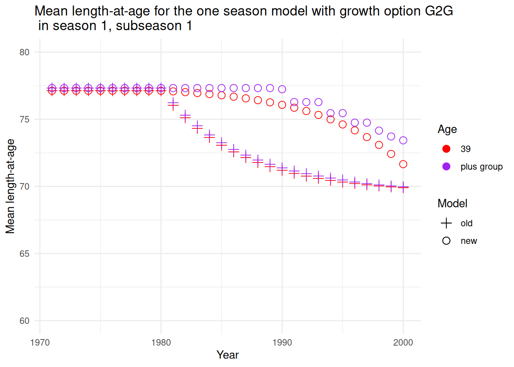
Result 5: Plus group updating
Growth model G1 with two seasons for age 39 and the plus group
| Growth model: | G1 |
| Seasonality: | two seasons |
| Season & subseason: | 1, 1 |
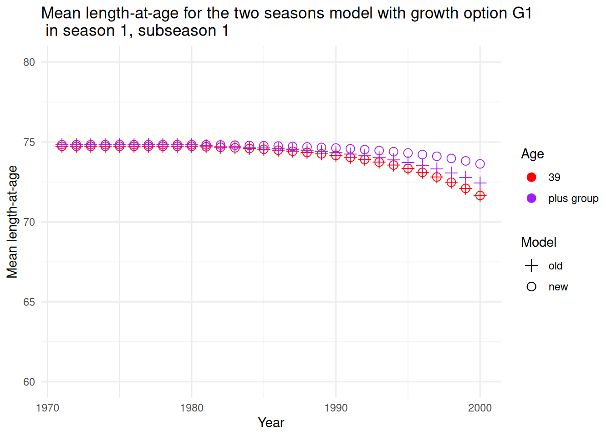
This is because the plus group updating depends upon the numbers-at-age of the fish in the plus group and the numbers entering the plus group. The one season model does this correctly, but the order of operations in SS3 causes the seasonal model to do the updating as a simple average, not a numbers weighted average.
Growth model G1 with one season for age 39 and the plus group
Another finding is that as the numbers-at-age in the plusgroup decline over time, the plus group mean size updating is increasingly dominated by the constant (0.01) added to the numbers in the plus group and to the numbers entering the plus group. This constant is necessary to avoid dividing by zero, but as the numbers-at-age become small relative to the constant, the length in the plus group becomes just the average of current plus group size and incoming fish size, as shown for the old model below. Reducing the constant to a very small value mitigates its impact on the mean size of fish in the plus group. Inaccuracy in plus group mean size due to small numbers has trivial impact on important quantities like Spawning Biomass, but display of the time series of mean size becomes much more logical with this revision.
| Growth model: | G1 |
| Seasonality: | one season |
| Season & subseason: | 1, 1 |
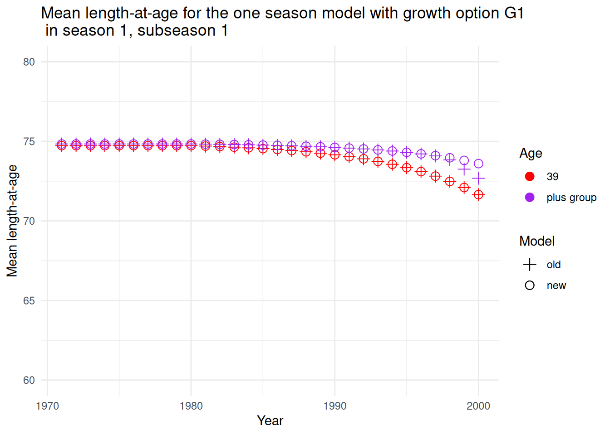
Result 6: Season match-up
The middle of the year for a one season model should match the beginning of season 2 in a two seasons model. The table below shows a match for 1971, but during the time series after the time-varying growth, there is a discrepancy at age 1 for the two seasons model. This only occurs for age 1 because it is the first age after \(A_{1}\).
| Growth | Season | Model | Morph | Yr | Seas | SubSeas | X0 | X1 | X2 | X3 | X4 | X39 | X40 |
|---|---|---|---|---|---|---|---|---|---|---|---|---|---|
| growth1 | oneseas | 3.30.24.1 | 1 | 1971 | 1 | 2 | 25.4383 | 32.2100 | 38.0546 | 43.0991 | 47.4530 | 74.7425 | 74.8417 |
| growth1 | oneseas | 3.30.24.1 | 1 | 1985 | 1 | 2 | 24.9353 | 30.8056 | 35.8722 | 40.2452 | 44.0195 | 74.5446 | 74.7674 |
| growth1 | twoseas | 3.30.24.1 | 1 | 1971 | 2 | 1 | 25.4383 | 32.2100 | 38.0546 | 43.0991 | 47.4530 | 74.7425 | 74.8417 |
| growth1 | twoseas | 3.30.24.1 | 1 | 1985 | 2 | 1 | 24.9353 | 27.9784 | 35.8722 | 40.2452 | 44.0195 | 74.5446 | 74.6325 |
Mean length-at-age for the one season and two seasons models with growth option G1 in years 1971 and 1985 using the v3.30.24.1 SS3 executable
The code changes in new SS3 executable resolve this problem:
| Growth | Season | Model | Morph | Yr | Seas | SubSeas | X0 | X1 | X2 | X3 | X4 | X39 | X40 |
|---|---|---|---|---|---|---|---|---|---|---|---|---|---|
| growth1 | oneseas | test | 1 | 1971 | 1 | 2 | 25.4383 | 32.2100 | 38.0546 | 43.0991 | 47.4530 | 74.7425 | 74.8417 |
| growth1 | oneseas | test | 1 | 1985 | 1 | 2 | 24.9353 | 30.8056 | 35.8722 | 40.2452 | 44.0195 | 74.5446 | 74.7675 |
| growth1 | twoseas | test | 1 | 1971 | 2 | 1 | 25.4383 | 32.2100 | 38.0546 | 43.0991 | 47.4530 | 74.7425 | 74.8417 |
| growth1 | twoseas | test | 1 | 1985 | 2 | 1 | 24.9353 | 30.8056 | 35.8722 | 40.2452 | 44.0195 | 74.5446 | 74.7675 |
Mean length-at-age for the one season and two seasons models with growth option G1 in years 1971 and 1985 using the new SS3 executable
Actions
Model Changes
Key change: Correct the usage of season duration as a multiplier on the growth rate and improve documentation of this code. Some scenarios were applying it twice, but that went undetected whenever season duration equaled 1.0
- Implement a trap to prevent shrinkage of mean size for the Richards/Gompertz and Cessation model. Previously it was only implemented for von Bertalanffy models. Note that the trap for the von Bertalanffy models is implemented on the remaining growth potential, but the trap for the Richards and Cessation is done on the resultant size-at-age.
- Revise cohort growth dev to work correctly for Richards. The challenge is that growth is working on \(log(size)\) in Richards and Gompertz.
- Add warning if
AFIX2age is set greater thannagesbecause it caused inaccurate \(L_{inf}\) calculation (except if 999 code is used). - Cohort growth dev included in the testing and added to the Cessation model.
- Correct (in
readcontrol.tpl) the identification of ages as linear growth in order to implement time-varying growth parameters in the correct year. - Add -997 to the options for growth in the plus group:
- Value (e.g. 0.12) which should approx initial \(Z\);
- -999 replicates v3.24 (with \(Z = 0.2\) and numbers weighted updating in years with time-varying growth);
- -998 ignores growth within plus group in initial year and disables time-varying changes in plus group mean size during the time;
- -997 ignores growth within plus group in initial year and enables updating time-varying plus group;
- #_note that the weighted average updating of plus group mean size-at-age is only implemented in years with time-varying growth flag turned on.
- Improve algorithm for calculating the numbers-weighted updating of the mean size in the plus group. The previous approach did a simple average in some configurations, especially with > 1 season.
- Numbers weighted averaging was adding 0.01 to the numbers to avoid divide by 0, but as actual numbers in population get below that value, the calculation of the weighted average size-at-age for the plusgroup was distorted. This was noted in the Growth Test by a difference in the rate of decline in plus group mean size between the two season and the one season model. Mitigate this issue by reducing the constant to \(1.0e-09\). Note that inaccurate mean size of plus group in this situation has trivial impact on Spawning Stock Biomass (SSB), but could be misleading if extracted and used outside the model. Note that the weighted average updating of plus group mean size-at-age is only implemented in years with time-varying growth flag turned on.
- For models with > 1 season the numbers-at-age were not yet calculated at the time they are needed for the plus group calculation, so the calculation was a simple average. Improve the situation by using the numbers from 1 year (
nseas) ago, which should be close to the correct ratio of numbers in the plus group relative to incoming numbers. However, some inaccuracy remains when there is a large cohort involved.
- Refactor von Bertalanffy \(K\) value. Previously, the von Bertalanffy \(K\) variable was given a negative value when first created. This continually caused confusion when editing the code. Change so that the variable now has a positive value and the negative is in the code accessing that variable.
- Augment the
MEAN_SIZE_TIMESERIESoutput by adding a second table organized by cohort rather than year.